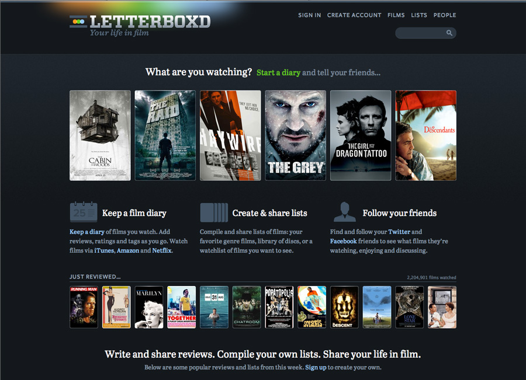
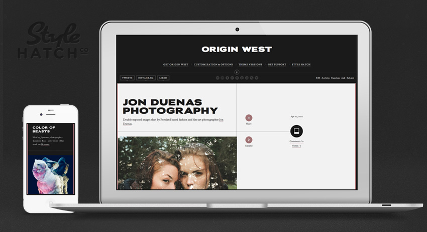

April 2012
04/24/2012 17:33:57
¶
●

Letterboxd
Congrats to Matthew Buchanan, Mike Harding and team on launching Letterboxd to the public!
Letterboxd is a social site for sharing your taste in film. Use it as a diary to record your opinion about films as you watch them, or just to keep track of films you’ve seen in the past. Rate, review and tag films as you add them. Find and follow your friends to see what they’re enjoying. Keep a watchlist of films you’d like to see, and make lists about any aspect of film, for example: favorite heist films. Import historic data from several popular apps, and add films to your US Netflix instant queue directly from the site.
To top it all of the design and user interaction is beyond beautiful.
#design #startup #film
04/23/2012 12:07:01
¶
●
In the theme "Origin West" you just released, how on earth did you extract a user's most recent Instagram shots and display them? I've been trying to figure it out but I just can't! (It looks beautiful, by the way.)
Origin West is our first theme to include the user’s Instagram feed. In order to access the user’s feed they will first have to authorize your application (in this case, a theme). Check out the Instagram developer site for their oAuth details.
I have seen a few themes put together a Tumblr static page to send the authorization request as well as return the access token, but we simply put together a quick page at stylehatch.co/instagram.
We’re working on setting up the Style Hatch Github account where we are planning our process as well as a few other jQuery plugins that we use, like our resizable custom photoset grid.
04/23/2012 11:49:03
¶
●

Origin West
Our 16th Style Hatch premium Tumblr theme is finally live! With Origin West theme I set my well-worn creative hat to the side and put on my developer hat to bring Nick Jones’ design to life. With a highly unique layout (responsive too with a mobile version), high contrast and lots of animating details who knows if it’ll be a popular theme but I certainly had a blast developing it. Check out the demo site at originwest.stylehatch.co!
One of the beautiful things about designing products rather than servicing clients is how you have complete freedom to take on the experimental and challenging projects. We could probably make far more money by focusing on popular design trends, quickly cranking out more themes or skipping the details, but to be honest we’re having way too much fun releasing themes with lots of love and attention.
If you have any questions about the theme send us an email at originwest@stylehatch.co or a tweet @stylehatch.
#style hatch #theme
04/23/2012 09:45:07
¶
●
If there’s something you want to build, but the tech isn’t there yet, just find the closest possible way to make it happen.
Dennis Crowley (via collaborativefund)
04/21/2012 20:53:11
¶
●
Don’t ignore your dreams; don’t work too much; say what you think; cultivate friendships; be happy.
Paul Graham, The Top of My Todo List
Based on the top five regrets of the dying, Paul Graham added these five items to the top of his ongoing todo list.
#ideas #inspiration
04/20/2012 12:52:44
¶
●
Brain Farm Digital Cinema 2012 Reel
Equipped with ultra high end cameras and a helicopter with a missile grade gyroscope, Brain Farm knows how to beautifully capture the impressive shots.
See their profile filmed for The Creators Project previously posted to hear how Curt Morgan’s career evolved from snowboarding to filmmaking after a major injury.
#reel #action sports #cinematography
04/20/2012 12:41:00
¶
●
Jon Duenas Photography
Double exposed images shot by Portland based fashion and fine art photographer Jon Duenas.
#photography #portrait #portland
04/19/2012 11:58:08
¶
●
Hillman Curtis | 1961-2012
Hillman Curtis was one of my strongest sources of inspiration early on in my career as a ‘new media designer’, and as he reinvented himself from a web designer to film maker it was encouragement for me to take huge risks in my career.
"It’s one of those things that I should always remember, to try and take the courageous route.”
—Hillman Curtis: On Reinvention and Taking the Courageous Path
Life is far too short to not take the courageous route.
#design #inspiration #motivation #film
04/18/2012 09:39:34
¶
●
Aaron James Draplin - CreativeMornings
The highly colorful and entertaining Draplin presents “The DDC 50 Point Plan to Ruin Yer Career". Over 50 minutes he’ll take you through points covering No.6 Get out there and get dirty, No.15 Exhibit a little humility, No.40 Don’t worry about awards, No.43 Go pantless and No.50 Be thankful for everything.
#ideas #process #career #Presentation
04/17/2012 08:47:00
¶
●
The trick about writing is to write. There is no trick.
Glenn Fleishman
#ideas #writing #articles
04/16/2012 15:39:13
¶
●
Once you’re dealing with an app that has a dozen screens and hundreds of states, you can’t hold the whole product in your head like a poster. I noticed that our team was emailing around individual screens, talking about individual screens, and naming all the screens just to keep track. But we weren’t paying any attention to how the screens and features fit together.
We were thinking of the product as a set of screens. But there’s a problem with working this way: it’s not at all how people experience the product in real life. People use products in little flows that last anywhere from 30 seconds to a few minutes. […]
A product is not a set of screens — it’s the stories those screens enable.
Don’t let your homepage or primary view of your app be like a great opening chapter to a novel followed by disconnected and boring rubbish. I think it’s time to look at my own process again and see what can be improved.
On a side note the Design Staff blog is a gold mine of a blog for designers, entrepreneurs and researchers.
#design #process #ideas
04/16/2012 14:53:38
¶
●
Heavenly Vaults
Full of overwhelming craftsmanship and detail, photographer David Stephenson captures the vaults and ceilings of European architecture from Romanesque to Gothic.
#design #Architecture #details #photography
04/13/2012 11:08:55
¶
●
As soon as we got the details on the new Spotify player on Tumblr, Jess and I put in some long hours over the last two days (and nights) to pulled off major updates to all 15 of our Style Hatch Tumblr themes.
In addition to support for the Spotify player, we added Pinterest’s ‘pin it’ button to the share options. We will be publishing a full list of changes soon since some of the themes got quite a bit of additional love.
If you have any questions send us an email at support@stylehatch.co or hit us up on Twitter @stylehatch. Now we can get back to wrapping up a bunch of new themes we have lined up!
#style hatch #themes #spotify #pinterest
04/02/2012 15:35:00
¶
●
With disappointment comes clarity, conviction and true originality.
Conan O’Brien
#ideas #motivation
Index